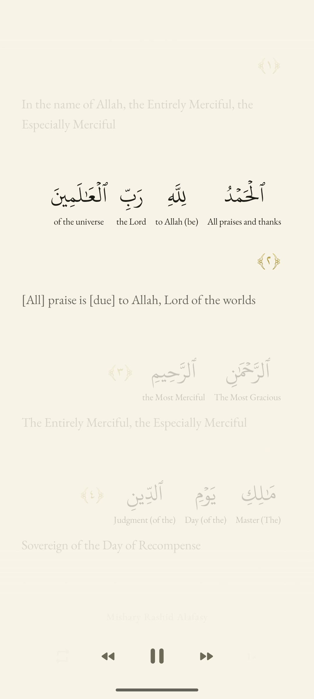

Arabic & English
Arabic runs right to left. An English gloss sits below each word; the full translation follows the ayah.
Every word blooms into light. Draw your heart closer to the Quran.

The living page
Each word blooms in its moment, its English meaning resting gently beneath.
In the name of Allah, the Entirely Merciful, the Especially Merciful
The essentials
Seven reciters, each timed word by word.
The full Quran, set in KFGQPC Hafs for clarity and fidelity.
An English gloss under each word; Saheeh International below each ayah.
Repeat one ayah, a full surah, or any range.
Search any surah by its English translation.
Audio downloads as needed, then caches for replay.
The interface
Four quiet sheets: bookmarks, chapters, reader, settings. No cards, no chrome — only the stillness of paper.


Three themes
Warm paper, charcoal nightfall, or royal green — each gilded in its own quiet light.
Reading modes
Arabic runs right to left. An English gloss sits below each word; the full translation follows the ayah.
English moves to the main line and glows with the recitation.
Turn transliteration and ayah translations on or off.
Open the web reader or install the Android app. No signup, no barriers — just begin.
Quran text (Uthmani) + Saheeh International translation — via the quran-json project, from Tanzil and Al Quran Cloud · free with attribution
Word-by-word gloss + transliteration — Quran.com dataset · free with attribution
Word timing segments — the quran-align project contributors · CC-BY 4.0
Repeat-aware timing segments — quran.com qdc audio API · free with attribution
Recitation audio — streamed from everyayah.com · rights remain with reciters
Arabic typeface — KFGQPC HAFS Uthmanic Script, King Fahd Complex · free redistribution